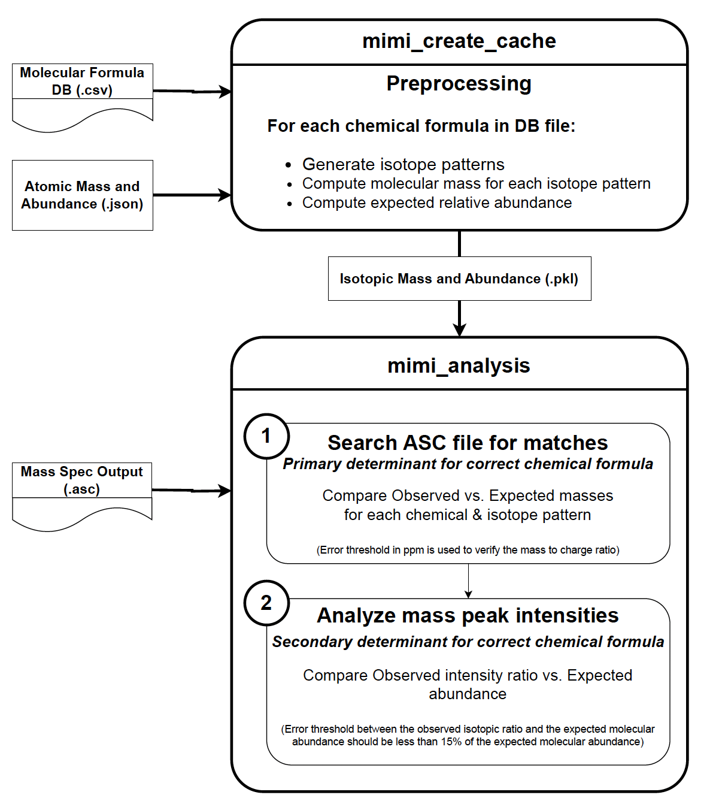
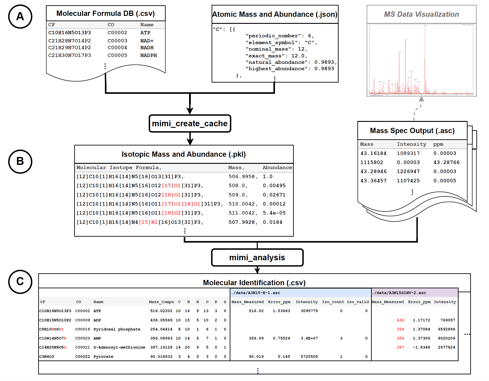

Mass Spectrometry Tool
Contents:
Introduction
Overview
Workflow
Command Reference
Architecture Design
MIMI architecture
MIMI architecture overview
MIMI workflow
mimi package
API Reference
License
Mass Spectrometry Tool
MIMI architecture
View page source
MIMI architecture
MIMI architecture overview

MIMI workflow
